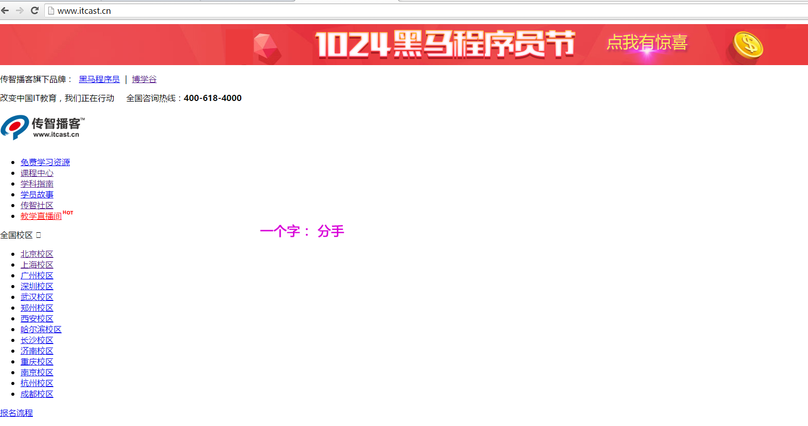
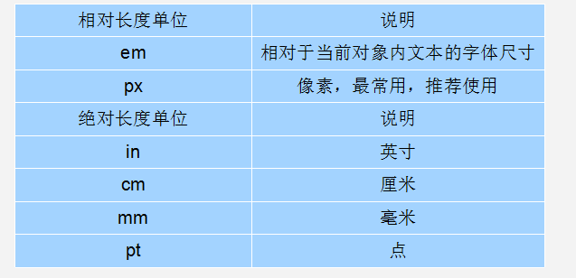
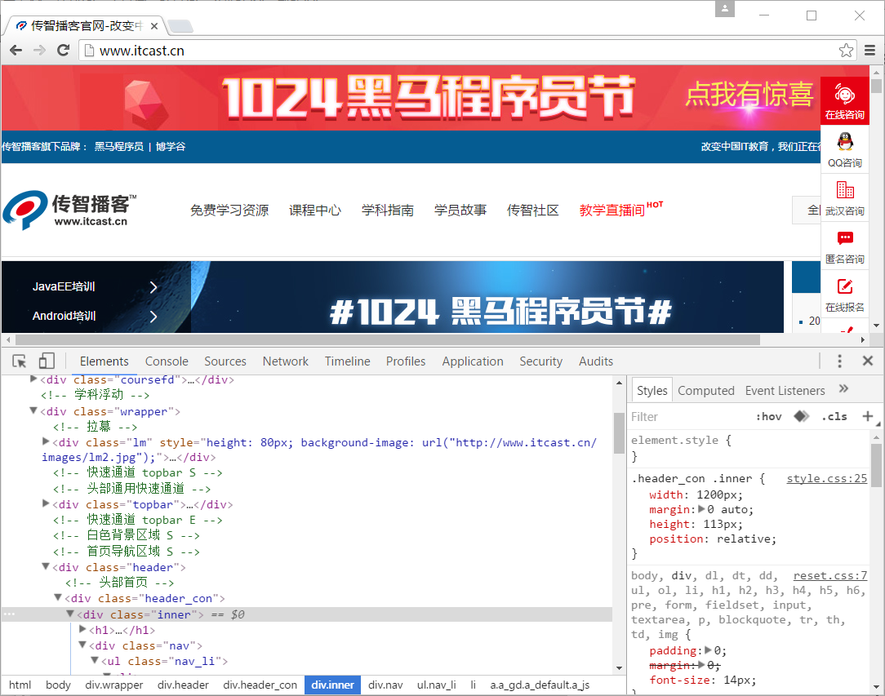

1.CSS 网页的美容师
拿什么拯救你，我的HTML。
html 标签 属性使用比较混乱 比如如下：
<font color="red" size="+3"> 此文字可以变为红色 </font>
要想改动文字为红色，你需要添加若干font 这些没有意义的标签。是任何地方。 比如要给一个 h1 标题添加红色，同样添加 font标签 。 这样对于页面结构完全没有用处。
CSS的出现，拯救了混乱的HTML，当让更加拯救了我们web开发者。 让我们的网页更加丰富多彩。
CSS的最大贡献就是： 让 HTML 从样式中解脱苦海， 实现了 HTML 专注去做 结构呈现。 而样式交给 CSS 后，你完全可以放心的早点洗洗睡了！

而且。。。。。 CSS 做的很出色，如果JavaScript是网页的魔法师，那么CSS它是我们网页的美容师，不信，你看:

ps: 你跟Angelababy只差了一个妆容的距离
来个更直观的认识吧：

有人说， 没有不漂亮的女人，只有不会打扮的女人。
我想说， 没有不好看的网页，只有不会CSS的前端。
网页添加 CSS和不添加CSS 的对比：
带有css的页面

没有CSS的页面

2. CSS初识
CSS(Cascading Style Sheets)
CSS通常称为CSS样式表或层叠样式表（级联样式表），主要用于设置HTML页面中的文本内容（字体、大小、对齐方式等）、图片的外形（宽高、边框样式、边距等）以及版面的布局等外观显示样式。
CSS以HTML为基础，提供了丰富的功能，如字体、颜色、背景的控制及整体排版等，而且还可以针对不同的浏览器设置不同的样式。
3. CSS样式规则
使用HTML时，需要遵从一定的规范。CSS亦如此，要想熟练地使用CSS对网页进行修饰，首先需要了解CSS样式规则，具体格式如下：

在上面的样式规则中:
1.选择器用于指定CSS样式作用的HTML对象，花括号内是对该对象设置的具体样式。
2.属性和属性值以“键值对”的形式出现。
3.属性是对指定的对象设置的样式属性，例如字体大小、文本颜色等。
4.属性和属性值之间用英文“:”连接。
5.多个“键值对”之间用英文“;”进行区分。
4. CSS字体样式属性
4.1 font-size:字号大小
font-size属性用于设置字号，该属性的值可以使用相对长度单位，也可以使用绝对长度单位。其中，相对长度单位比较常用，推荐使用像素单位px，绝对长度单位使用较少。具体如下：

4.2 font-family:字体
font-family属性用于设置字体。网页中常用的字体有宋体、微软雅黑、黑体等，例如将网页中所有段落文本的字体设置为微软雅黑，可以使用如下CSS样式代码：
p{ font-family:"微软雅黑";}
可以同时指定多个字体，中间以逗号隔开，表示如果浏览器不支持第一个字体，则会尝试下一个，直到找到合适的字体。
 常用技巧：
常用技巧：
- 现在网页中普遍使用14px+。
- 尽量使用偶数的数字字号。ie6等老式浏览器支持奇数会有bug。
- 各种字体之间必须使用英文状态下的逗号隔开。
- 中文字体需要加英文状态下的引号，英文字体一般不需要加引号。当需要设置英文字体时，英文字体名必须位于中文字体名之前。
- 如果字体名中包含空格、#、$等符号，则该字体必须加英文状态下的单引号或双引号，例如font-family: "Times New Roman";。
- 尽量使用系统默认字体，保证在任何用户的浏览器中都能正确显示。
4.2.1 CSS Unicode字体
在 CSS 中设置字体名称，直接写中文是可以的。但是在文件编码（GB2312、UTF-8 等）不匹配时会产生乱码的错误。xp 系统不支持 类似微软雅黑的中文。
方案一： 你可以使用英文来替代。 比如 font-family:"Microsoft Yahei"。
方案二： 在 CSS 直接使用 Unicode 编码来写字体名称可以避免这些错误。使用 Unicode 写中文字体名称，浏览器是可以正确的解析的。 font-family: "\5FAE\8F6F\96C5\9ED1"，表示设置字体为“微软雅黑”。

可以通过escape() 来测试属于什么字体。
| 字体名称 | 英文名称 | Unicode 编码 |
| 宋体 | SimSun | \5B8B\4F53 |
| 新宋体 | NSimSun | \65B0\5B8B\4F53 |
| 黑体 | SimHei | \9ED1\4F53 |
| 微软雅黑 | Microsoft YaHei | \5FAE\8F6F\96C5\9ED1 |
| 楷体_GB2312 | KaiTi_GB2312 | \6977\4F53_GB2312 |
| 隶书 | LiSu | \96B6\4E66 |
| 幼园 | YouYuan | \5E7C\5706 |
| 华文细黑 | STXihei | \534E\6587\7EC6\9ED1 |
| 细明体 | MingLiU | \7EC6\660E\4F53 |
| 新细明体 | PMingLiU | \65B0\7EC6\660E\4F53 |
4.3 font-weight:字体粗细
字体加粗除了用 b 和 strong 标签之外，可以使用css 来实现，但是css 是没有语义的。
font-weight属性用于定义字体的粗细，其可用属性值：normal、bold、bolder、lighter、100~900（100的整数倍）。
小技巧： 数字 400 等价于 normal，而 700 等价于 bold。 但是我们更喜欢用数字来表示。
4.4 font-style:字体风格
字体倾斜除了用 i 和 em 标签之外，可以使用css 来实现，但是css 是没有语义的。
font-style属性用于定义字体风格，如设置斜体、倾斜或正常字体，其可用属性值如下：
normal：默认值，浏览器会显示标准的字体样式。
italic：浏览器会显示斜体的字体样式。
oblique：浏览器会显示倾斜的字体样式。
小技巧： 平时我们很少给文字加斜体，反而喜欢给斜体标签（em，i）改为普通模式。
4.5 font:综合设置字体样式 (重点)
font属性用于对字体样式进行综合设置，其基本语法格式如下：
选择器{font: font-style font-weight font-size/line-height font-family;}
使用font属性时，必须按上面语法格式中的顺序书写，不能更换顺序，各个属性以空格隔开。
注意：其中不需要设置的属性可以省略（取默认值），但必须保留font-size和font-family属性，否则font属性将不起作用。
5. 开发者工具（chrome）
此工具是我们的必备工具，以后代码出了问题，我们首先第一反应就是：
“按F12”或者是 “shift+ctrl+i” 打开 开发者工具。
菜单： 右击网页空白出---查看

小技巧：
- ctrl+滚轮 可以 放大开发者工具代码大小。
- 左边是HTML元素结构 右边是CSS样式。
- 右边CSS样式可以改动数值和颜色查看更改后效果。
6. 选择器（重点）
要想将CSS样式应用于特定的HTML元素，首先需要找到该目标元素。在CSS中，执行这一任务的样式规则部分被称为选择器（选择符）。
如上图所以，要把里面的小黄人分为2组，最快的方法怎办？
很多， 比如 一只眼睛的一组，剩下的一组
这就用到基础选择器组：
6.1标签选择器（元素选择器）
标签选择器是指用HTML标签名称作为选择器，按标签名称分类，为页面中某一类标签指定统一的CSS样式。其基本语法格式如下：
标签名{属性1:属性值1; 属性2:属性值2; 属性3:属性值3; } 或者
元素名{属性1:属性值1; 属性2:属性值2; 属性3:属性值3; }
标签选择器最大的优点是能快速为页面中同类型的标签统一样式，同时这也是他的缺点，不能设计差异化样式。
课堂案例：
传智简介
6.2 类选择器
类选择器使用“.”（英文点号）进行标识，后面紧跟类名，其基本语法格式如下：
.类名{属性1:属性值1; 属性2:属性值2; 属性3:属性值3; }
标签调用的时候用 class=“类名” 即可。
类选择器最大的优势是可以为元素对象定义单独或相同的样式。
小技巧：
1.长名称或词组可以使用中横线来为选择器命名。
2.不建议使用“_”下划线来命名CSS选择器。
输入的时候少按一个shift键; 浏览器兼容问题 (比如使用tips的选择器命名，在IE6是无效的) 能良好区分JavaScript变量命名(JS变量命名是用“”)
不要纯数字、中文等命名， 尽量使用英文字母来表示。
尽量不要使用标签名作为类名，比如 .p .h1 这是不合法的。
课堂案例：

猜谜底游戏：
 你猜？
你猜？
命名规范： 见附件（Web前端开发规范手册.doc）
命名是我们通俗约定的，但是没有规定必须用这些常用的命名。
6.3 多类名选择器
我们可以给标签指定多个类名，从而达到更多的选择目的。

注意：
样式显示效果跟HTML元素中的类名先后顺序没有关系,受css样式书写的上下顺序有关。
各个类名中间用空格隔开。
多类名选择器在后期布局比较复杂的情况下，还是较多使用的。
6.4 id选择器
id选择器使用“#”进行标识，后面紧跟id名，其基本语法格式如下：
#id名{属性1:属性值1; 属性2:属性值2; 属性3:属性值3; }
该语法中，id名即为HTML元素的id属性值，大多数HTML元素都可以定义id属性，元素的id值是唯一的，只能对应于文档中某一个具体的元素。
用法基本和类选择器相同。
6.5 id选择器和类选择器区别
W3C标准规定，在同一个页面内，不允许有相同名字的id对象出现，但是允许相同名字的class。
类选择器（class） 好比人的名字， 是可以多次重复使用的， 比如 张伟 王伟 李伟 李娜
id选择器 好比人的身份证号码， 全中国是唯一的， 不得重复。 只能使用一次。

6.6 通配符选择器
通配符选择器用“*”号表示，他是所有选择器中作用范围最广的，能匹配页面中所有的元素。其基本语法格式如下：
*{属性1:属性值1; 属性2:属性值2; 属性3:属性值3; }
例如下面的代码，使用通配符选择器定义CSS样式，清除所有HTML标记的默认边距。
- { margin: 0; / 定义外边距/ padding: 0; / 定义内边距/ }
注意：
这个通配符选择器，就像我们的电影明星中的梦中情人， 想想它就好了，但是它不会和你过日子。平时工作我们很少使用通配符选择器。
7. CSS注释
CSS规则是使用 /* 需要注释的内容 */ 进行注释的，即在需要注释的内容前使用 “/*” 标记开始注释，在内容的结尾使用 “*/”结束。
例如：
- {
}font-size: 14px; /* 所有的字体是14像素大小*/
8. CSS外观属性
8.1 color:文本颜色
color属性用于定义文本的颜色，其取值方式有如下3种：
1.预定义的颜色值，如red，green，blue等。
2.十六进制，如#FF0000，#FF6600，#29D794等。实际工作中，十六进制是最常用的定义颜色的方式。
3.RGB代码，如红色可以表示为rgb(255,0,0)或rgb(100%,0%,0%)。
需要注意的是，如果使用RGB代码的百分比颜色值，取值为0时也不能省略百分号，必须写为0%。
小技巧：
1.一般情况下颜色我们喜欢小写字母 比如 #ff0000。
2.css我们颜色简写 比如 #ff0000 可以简写为 #f00 #ff00ff 简写为 #f0f
8.2 line-height:行间距
ine-height属性用于设置行间距，就是行与行之间的距离，即字符的垂直间距，一般称为行高。line-height常用的属性值单位有三种，分别为像素px，相对值em和百分比%，实际工作中使用最多的是像素px。
小技巧：
一般页面中的行高设置比字号大7~8像素左右就可以了, 比如当前使用14像素的字号，行高设为24像素左右合适。
8.3 text-align:水平对齐方式
text-align属性用于设置文本内容的水平对齐，相当于html中的align对齐属性。其可用属性值如下：
left：左对齐（默认值）
right：右对齐
center：居中对齐
8.4 text-indent:首行缩进
text-indent属性用于设置首行文本的缩进，其属性值可为不同单位的数值、em字符宽度的倍数、或相对于浏览器窗口宽度的百分比%，允许使用负值, 建议使用em作为设置单位。
9. 标签语义化
语义化的主要目的就是让大家直观的认识标签(markup)和属性(attribute)的用途和作用
语义化的网页的好处，最主要的就是对搜索引擎友好，有了良好的结构和语义你的网页内容自然容易被搜索引擎抓取。
核心：合适的地方给一个最为合理的标签。
语义是否良好： 当我们去掉CSS之后，网页结构依然组织有序，并且有良好的可读性。
不管是谁都能看懂这块内容是什么。
遵循的原则：先确定语义的HTML ，再选合适的CSS。
小技巧：
1.重语义的地方多用有语义的标签，比如 h 和 p 等等，少用没有语义的标签比如 div span 等等。
2. 如果有地方可以用p 又可以用div，特别是文字段落， 优先选用 p标签（结构更清晰）
3.少用纯样式标签 比如 b u font，可以运用css样式。 如果有强调的地方，可以考虑 strong em 等 有强调语义的标签。